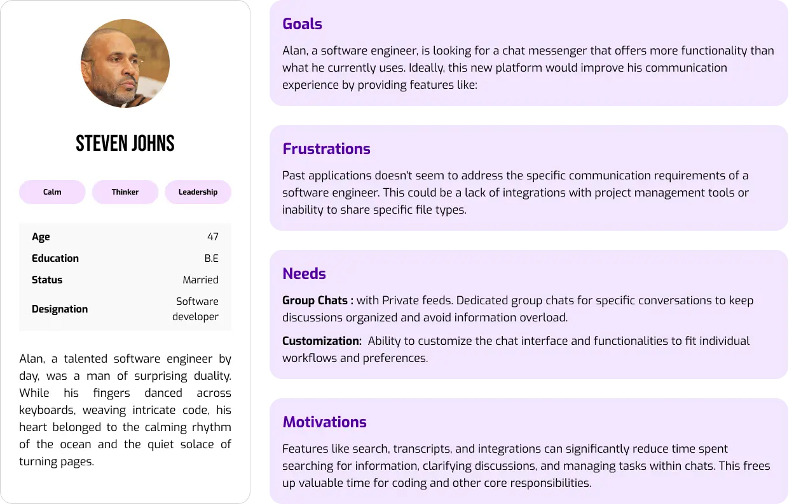
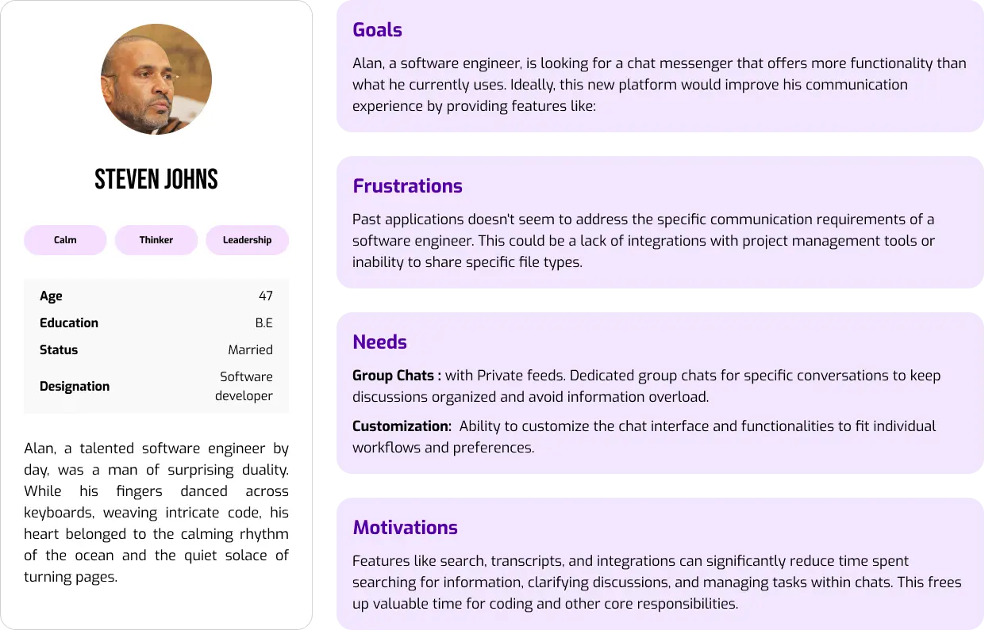

Scriptchat
Join the Conversation | Connect & Share
ScriptChat was born from this very idea: to take communication a step further. It's not about replicating what exists, it's about crafting a new and unique experience
Script Chat

So how it takes a step further?
BROWSE | CONVERSE | POST
MY ROLE
User Research
Qualitative Research
Qualitative research involves in in-depth explorations and understanding of user experiences,behaviours and motivations. In the context of Scriptchat, This provides rich insights into the emotional and psychological aspects of conversator’s need and preference, helping to get sufficient insights that quantitative data alone may not capture.
User Interviews

The Spark Behind ScriptChat:
A transformative 10 months
I led this journey in 2021 with brainstorming sessions and
in-depth user research to understand unmet needs. We then crafted
initial designs focused on solving those pain points.Throughout 2022,
continuous discovery and user feedback led us to a breakthrough!
This unique app has achieved a significant milestone, with
functionalities that resonate with users of all ages.
TRANSCRIPT FEATURE
Need for accessibility | Improved searchability | Increased efficiency | Improved searchability

BRAND AWARENESS
Regular exposure | Interactive communication | Organic reach

Clear labeling
Use clear and concise labels in the mic settings menu to identify the language options. Include native language names for broader understandability.

Voice in Feeds and Conversations
Speech Recognition Accuracy | Privacy Concerns | More Natural Interaction
Record Transcripts
Provides a visual reference for the recording, useful for scrubbing through the audio.
Search
Memories at your fingertips: Search Photos, Videos, Contacts, Messages
Audio Call
Heads up! Incoming call from your contacts, Don't miss out!


TRANSCRIPTS
& much more in chats
"Say goodbye to the pain of typing long paragraphs in messenger apps! ScriptChat offers a refreshing alternative for those who find it cumbersome to compose lengthy messages on platforms like WhattsApp and Viber."
Everything under your control
Curated Feeds
Imagine a private space within a group chat where you can share information or have conversations with a specific subset of members within the main group. This subset could be based on common interests, project needs, or any other criteria you define.

User Personas
 

Empathy Mapping
User Journey
Want to know more about me?
Let's Coffee & Work More
Get in touch